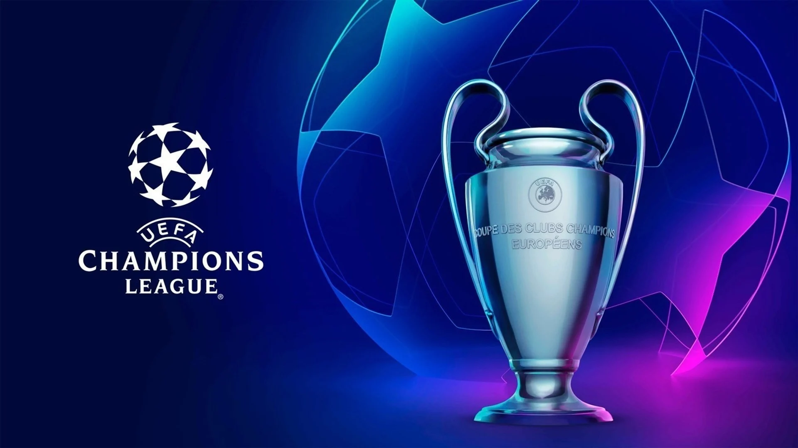

html
História da UEFA Champions League
UEFA Champions League

Origem
A Champions League foi criada em 1955 ainda com o nome de Taça dos Clubes Campeões Europeus. Embora sempre tenha sido respaldada pela UEFA, a ideia da criação partiu dos jornalistas franceses Jacques Ferran e Gabriel Hanot, ambos do jornal L’Équipe. A primeira edição contou com os campeões nacionais da Bélgica,
Dinamarca, Suécia, Itália, Espanha, França e Alemanha, além de outros nove clubes convidados, e acabou com o Real Madrid tornando-se campeão na final contra o Stade de Reims, da França.
O clube merengue ganhou não só a primeira edição como também as outras quatro seguintes, emendando o primeiro e único pentacampeonato consecutivo da história da competição. Outras equipes vieram a conquistar um tricampeonato de forma seguida: o Ajax (1971, 1972 e 1973); o Bayern de Munique (1974, 1975 e 1976) e mais uma vez o Real Madrid (2016, 2017 e 2018).
Times Vencedores
- Real Madrid: 14 (1955/1956, 1956/1957, 1957/1958, 1958/1959, 1959/1960, 1965/1966, 1997/1998, 1999/2000, 2001/2002, 2013/2014, 2015/2016, 2016/2017,
2017/2018 e 2021/2022)
- Milan: 7 (1962/1963, 1968/1969, 1988/1989, 1989/1990, 1993/1994, 2002/2003 e 2006/2007)
- Bayern de Munique: 6 (1973/1974, 1974/1975, 1975/1976, 2000/2001, 2012/2013 e 2019/2020)
- Liverpool: 6 (1976/1977, 1977/1978, 1980/1981, 1983/1984, 2004/2005 e 2018/2019)
- Barcelona: 5 (1991/1992, 2005/2006, 2008/2009, 2010/2011 e 2014/2015)
- Inter de Milão: 3 (1963/1964, 1964/1965 e 2009/2010)
- Manchester United: 3 (1967/1968, 1998/1999 e 2007/2008)
- Juventus: 2 (1984/1985 e 1995/1996)
- Benfica: 2 (1960/1961 e 1961/1962)
- Chelsea: 2 (2011/2012 e 2020/2021)
- Manchester City: 1 (2022/2023)
- Borussia Dortmund: 1 (1996/1997)